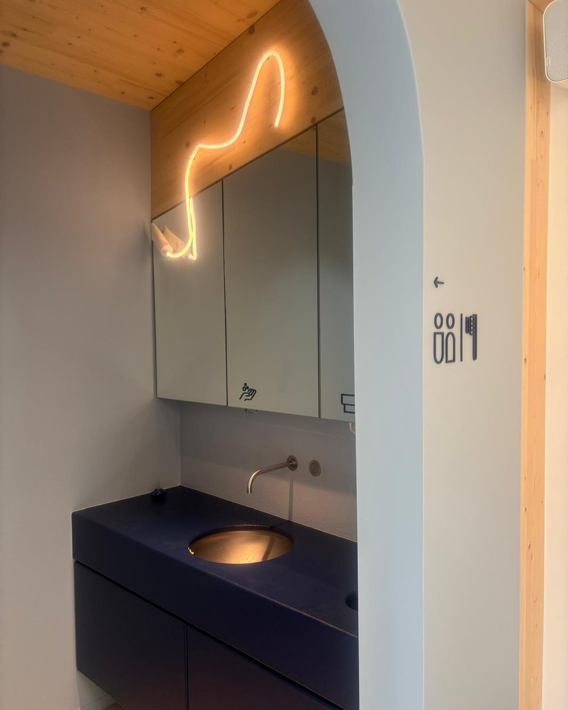

Tandpoort is een hedendaagse tandartspraktijk waar mensen centraal staan. We nemen de tijd om onze patiënten te leren kennen en bieden kwaliteitsvolle, wetenschappelijk onderbouwde zorg in een persoonlijke sfeer.
Vanaf 16 september 2026 vind je ons op Halvemaanstraat 131

Tandartsen Beelbroek heet voortaan Tandpoort. De praktijk aan de Beelbroekstraat is gesloten. Je vindt ons op Halvemaanstraat 131, in een nieuw gebouw met vier behandelstoelen.
Van de halfjaarlijkse controle tot een volledige rehabilitatie van je gebit. Voor elke behandeling nemen we de tijd die ze verdient.
Periodieke controle, professionele reiniging en advies om problemen voor te zijn. Onze mondhygiëniste ondersteunt je hierin.
Behandeling van cariës, vullingen, kronen en herstel van beschadigde tanden of slijtage.
Oplossingen voor ontbrekende tanden: implantaten, bruggen en prothesen, met aandacht voor comfort en een natuurlijk resultaat.
Duurzaam herstel van de mond als geheel, met oog voor gezondheid, kauwfunctie én esthetiek. Ook in complexe situaties.
We nemen de tijd om elke behandeling zorgvuldig uit te voeren, met oog voor detail en precisie. Met aandacht voor comfort, vertrouwen en duurzame oplossingen werken we samen aan een gezonde mond voor vandaag en morgen.
Tandpoort is een gevestigde praktijk. Eline Verbeke en Leen Ampe leiden ze samen, met drie assistentes en een mondhygiëniste. Sinds september 2026 werken we in een nieuw gebouw met vier behandelstoelen en een volledig digitale workflow.
Maak kennis met het teamBehandelstoelen in de nieuwe praktijk
Telefonisch bereikbaar van 9:00 tot 12:30 en van 14:00 tot 18:00
Intra-orale scanner, CBCT en digitaal patiëntendossier
Afspraken maak je telefonisch, tijdens de telefoon-uren op weekdagen.
Bel 09 228 04 09
Route plannen
info@tandpoort.be
Parkeren: de praktijk heeft geen eigen parking. Je kan parkeren op straat in de buurt. Laat de poorten en opritten van de buren vrij.
Tandarts? Er is plaats voor meerdere collega's die ons team willen versterken.
Werken bij ons